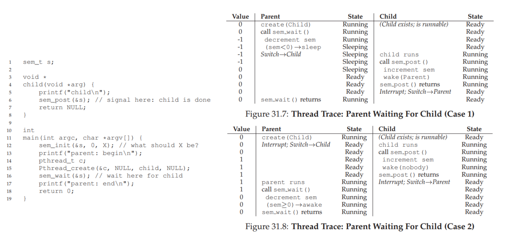

Semaphores#
teaching: 0 exercises: 0 questions:
“How to support atomicity with semaphores?” objectives:
“First learning objective. (FIXME)” keypoints:
“First key point. Brief Answer to questions. (FIXME)”
1. What have we learned so far?#
Both lock and condition variables are needed to solve more complex concurrency problems.
Can we do better?
> ## 2. Edsger Dijkstra
>
> - Dijkstra, Edsger W. *"The structure of the "THE" multiprogramming system."*
> In The origin of concurrent programming, pp. 139-152. Springer, New York, NY, 1968.
> - Dijkstra, Edsger W. *"Information streams sharing a finite buffer."* In Inf. Proc.
> Letters, vol. 1, pp. 179-180. 1972.
> - Together with colleagues, developed semaphore as a single primitive for all things
> related to synchronization.
3. Semaphore#
Is an object with an integer value that can be manipulated with two routines:
Needs to be initialized to some value.
> ## 3. sem_wait() and sem_post()
>
> - More important, how do we use `sem_wait()` and `sem_post()` to facilitate
> synchronization for concurrency?
> <img src="../fig/semaphores/01.png" alt="wait and post" style="height:200px">
4. Aspects of sem_wait() and sem_post()#
sem_wait()andsem_post()are atomic operations.sem_wait()either return right away or it will cause the caller to wait.sem_post()simply increase the value of the semaphore and wakes one of the waiting thread up.The value of the semaphore, when negative, is equal to the number of waiting threads.
> ## 5. Semaphore as lock (binary semaphore)
>
> <img src="../fig/semaphores/02.png" alt="sem as lock" style="height:200px">
> <img src="../fig/semaphores/03.png" alt="sem as lock" style="height:500px">
6. Semaphore as condition variable#

> ## 7. Semaphore: producer/consumer I
>
> - What is the risk if MAX > 1 and there are multiple producers/consumers?
> - Race condition: two producers produce at the same time or two consumers
> consume at the same time.
> - What is currently missing from this implementation?
> - Mutual exclusion
>
> <img src="../fig/semaphores/05.png" alt="wait and post" style="height:400px">
8. Semaphore: producer/consumer II#
Mutual exclusion is added, incorrectly.
Consumer runs first, then wait on
full(but still holdingmutex).Producer sees negative mutex, decreases it further, then goes to sleep.
> ## 9. Semaphore: producer/consumer III
>
> - Mutual exclusion is added, correctly.
> - `full` and `empty` are for producers and consumers to wait on one another.
> - `mutex` for producers and consumers to wait among each group.
>
> <img src="../fig/semaphores/07.png" alt="wait and post" style="height:600px">
10. The dining philosophers#
It’s Dijkstra again.
There are five philosophers seating around a table.
Between each pair of philosophers there is a single fork (five forks total).
Philosophers alternate between thinking and eating (need fork).
Two forks are needed to eat (one to the left and one to the right).
How to schedule fork grabbing pattern so that no one starves?

> ## 11. Solutions
>
> - which one works?
>
> <img src="../fig/semaphores/09.png" alt="dining philosopher solutions" style="height:300px">
{% include links.md %}